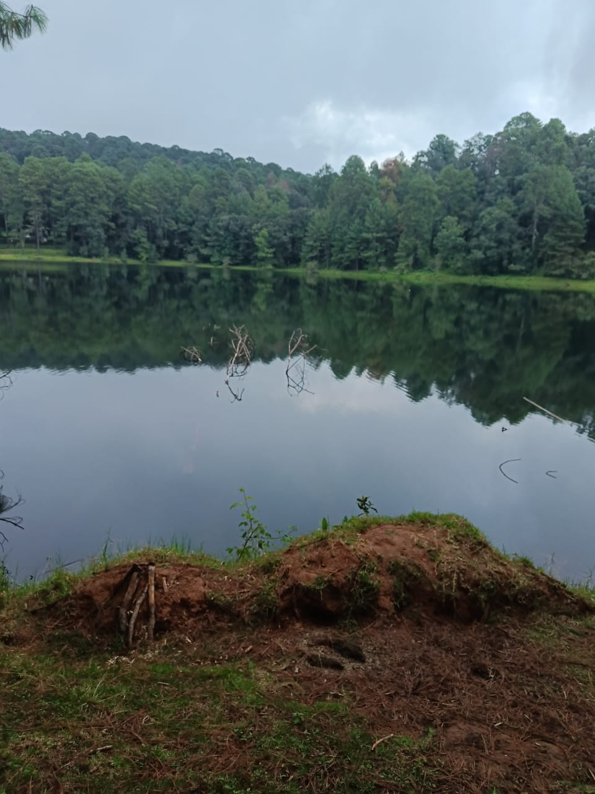
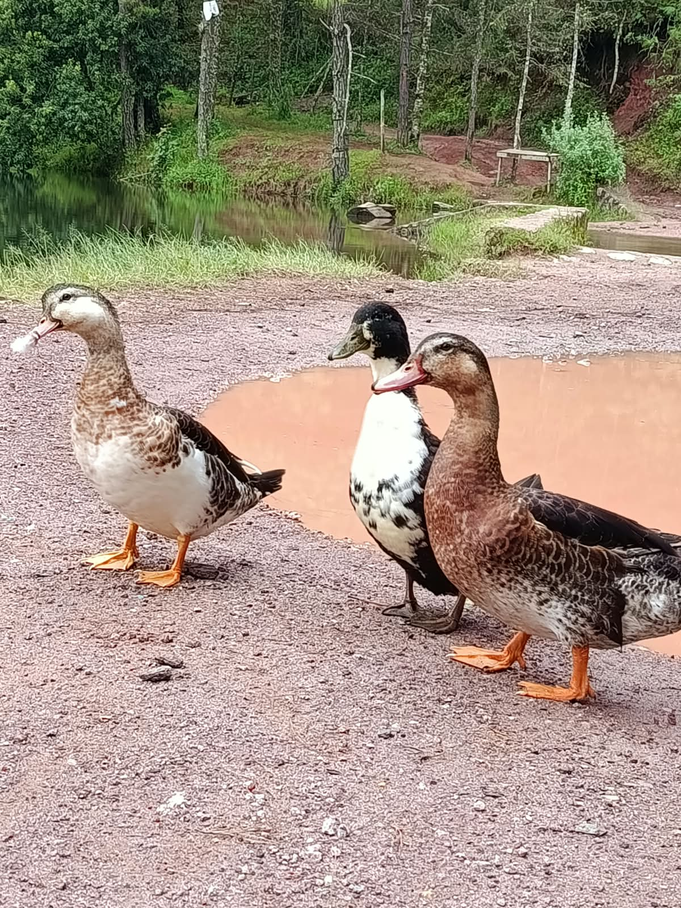

La Laguna Negra del Pinal del Marquesado es un atractivo natural ubicado en el municipio de Valle de Bravo, Estado de México. Se caracteriza por su entorno natural, rodeado de vegetación y paisajes que transmiten tranquilidad. Su nombre evoca el aspecto oscuro de sus aguas, que puede relacionarse con la profundidad, la sombra de los árboles y los reflejos del paisaje. Es un lugar que destaca por la belleza de la naturaleza y por la oportunidad de alejarse del ruido de la ciudad.
Ciclismo de montaña: Es una de las rutas más populares y extenuantes de la región
-Motocross y enduro: Brechas muy buenas para moto de campo
Senderismo y fotografía de paisaje
Parapente: Muy cerca están Cerro Gordo, Maguey y Los Tres Reyes, que son puntos infaltables en competencias internacionales de parapente
Picnic y contemplación: No hay servicios de lanchas como en la laguna grande, es para desconectarse. 187c

En los días nublados es un buen momento para que la vida silvestre como en este caso los animales salen a las orillas de la laguna para comer un poco con una sencilla calma y sin cuidado de ser atacados
Este sitio es ideal para apreciar el paisaje, observar la vegetación y disfrutar del aire libre. El entorno boscoso de la región le da un ambiente especial, perfecto para tomar fotografías y conocer la riqueza natural de Valle de Bravo. Además, lugares como este nos recuerdan la importancia de cuidar los ecosistemas, evitar tirar basura y respetar las plantas y los animales que habitan en la zona.
La Laguna Negra se considera un atractivo natural de la región, conocido por su ambiente tranquilo y sus paisajes boscosos. Se ha convertido en un punto de interés para quienes disfrutan caminar y explorar la naturaleza